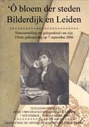
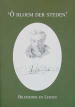

‘Ô bloem der steden’. Bilderdijk en Leiden
Als dichter, schrijver en geleerde heeft Willem Bilderdijk, meer dan wie ook, een stempel op zijn tijd gedrukt. Zijn kwaliteiten als poëet hebben nooit ter discussie gestaan, maar zijn scherpe kritiek op van alles en nog wat riep veel weerstanden op. Dat heeft echter ook stimulerend gewerkt. In zijn verzet tegen de geest der eeuw werd deze conservatieve romanticus een factor van betekenis. Wie zich bezighoudt met de negentiende eeuw, kan niet om Bilderdijk heen.
Deze webpresentatie geeft een indruk van Bilderdijks veelzijdigheid. Getoond worden boeken, brieven, tekeningen, prenten, portretten en zelfs een haarlok van de dichter. Voor een belangrijk deel zijn deze stukken afkomstig uit de Bibliotheek van de Maatschappij der Nederlandse Letterkunde, het genootschap dat Bilderdijk tot erelid benoemde en dat na zijn dood een respectabele collectie Bilderdijkiana bijeenbracht. De volgende onderwerpen komen aan bod:
Een begeleidende catalogus, geschreven door Rick Honings, verschijnt in de reeks Kleine publicaties van de Universiteitsbibliotheek Leiden. De catalogus is te koop bij de receptie van de Universiteitsbibliotheek (prijs: € 15,00).
|  |  |
| volgende pagina | |